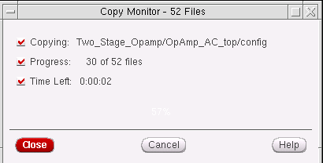

Setting Copy and Rename Preferences
To set preferences for copy and rename operations, do the following:
-
Choose Edit – Copy Preferences.
The Copy Preferences form is displayed. - Choose one of the following Library and Cell Property Files settings, which apply to copy operations only:
- Choose one of the following Cellview Contents settings, which apply to copy operations only:
-
Choose one of the following Remote Copy Service settings, which apply to both copy and rename operations:
- Use session’s Copy service when available
-
Use Library Manager local Copy engine onlyFor more information about remote copy services, see the description of
cdsLibManager.copyGlobals mpsRadio togglein Using UNIX to Add Settings to a .cdsenv File.
-
Choose Miscellaneous Settings:
-
Enable file progress monitor causes the Copy Monitor form to appear during the copy operation.If you click Cancel, the Confirm Cancellation form appears.
- Warn about Rename of manage data (DM) causes the Warning: Renaming Managed Data form to appear whenever any part or all of the library you are renaming is under design management (DM).
-
Enable file progress monitor causes the Copy Monitor form to appear during the copy operation.
Related Topics
Return to top